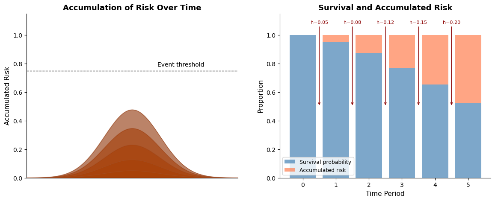
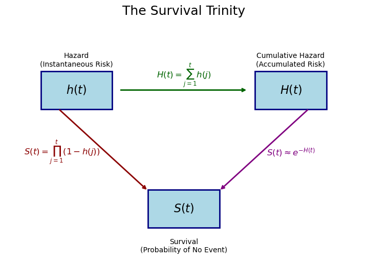
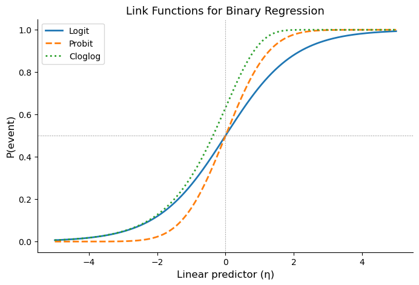
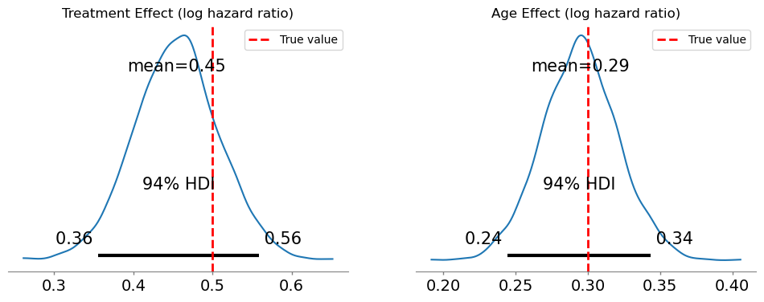
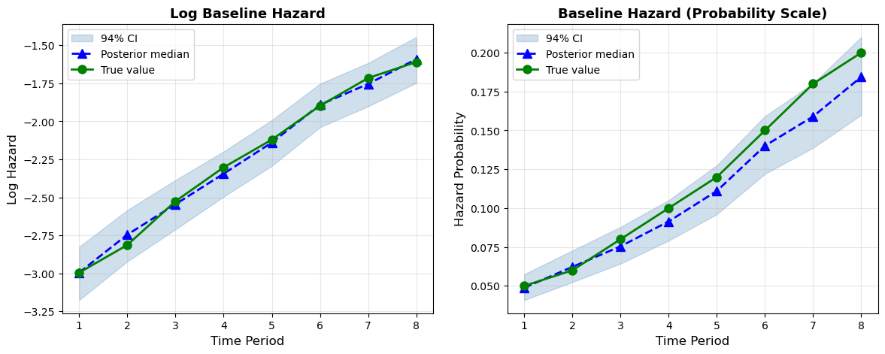
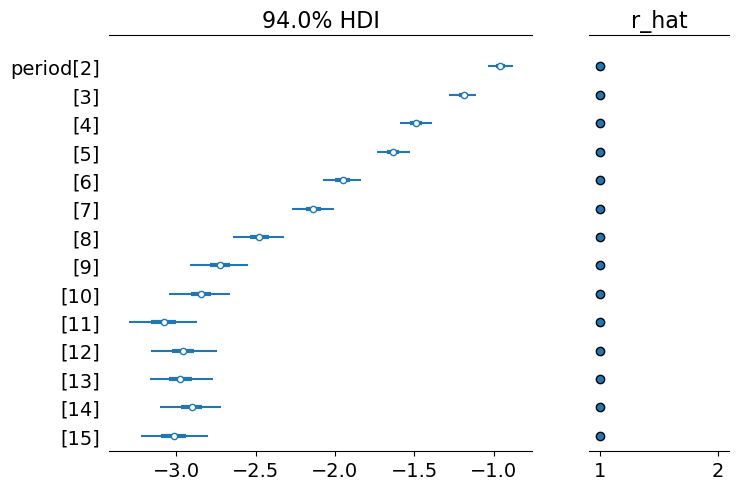
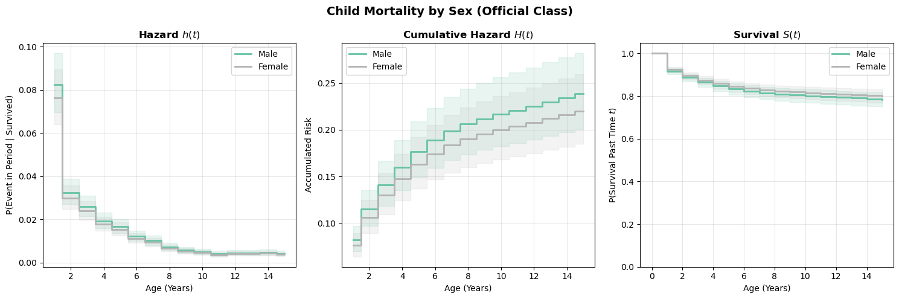
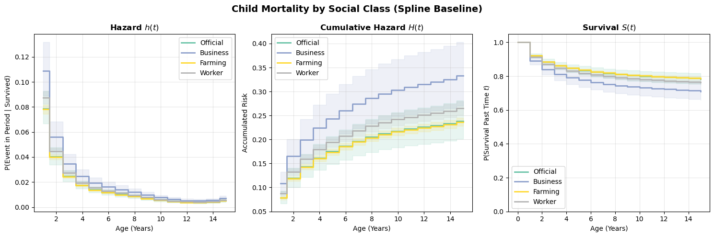
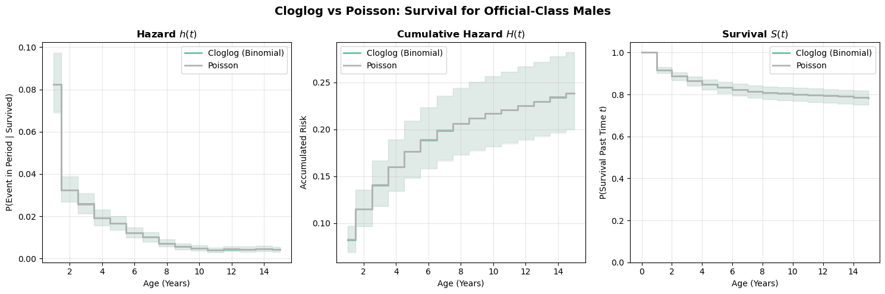

import arviz as az
import bambi as bmb
import matplotlib.pyplot as plt
import numpy as np
import pandas as pd
from scipy.special import expit, erfDiscrete time hazards and survival analysis
The regression perspective on survival
In this example, we take the view that survival modeling is just regression with a clever data structure.
The traditional machinery of survival analysis invokes the arcane terms of “Kaplan-Meier curves”, “log-rank tests” and “Cox proportional hazard”. This can feel like a separate statistical universe with its own notation, software, and rituals. But underneath, we’re doing something quite simple: modeling the probability of an event occurring at time \(t\), given that it hasn’t occurred yet.
This perspective has several advantages:
- Flexibility: Use any regression framework (Bayesian, frequentist, ML)
- Interpretability: Coefficients have familiar interpretations
- Extensions: Easy to add random effects, non-linear terms, interactions
- Software: Use general-purpose tools rather than specialized survival packages
This notebook is part of a series where we will cover: (1) discrete time implementations of survival models and (2) continuous time implementations of survival models. Here we’re focused on (1) and wish to set up the broad ideas of how survival models are well phrased as regression problems.
Accumulating risk: first a trickle, then a flood
Before diving into the math, let’s build intuition with a thought experiment. When does a collection of sand grains become a heap? When is a downpour a flood? How do different processes of accumulation yield categorical distinctions or presage state-transitions? These are the questions at the heart of survival modelling.
NoteThe Sorites paradox and survival
The ancient Sorites paradox asks: if you start with no heap of sand and add one grain at a time, when does it become a heap? One grain does not make a heap; neither do two or three, but eventually, accumulation produces a qualitative change. A state-transition has occurred and we’ve moved into a new categorical outcome.
Survival analysis adopts this accumulation perspective. A patient or system starts in a functioning state. Each day, a small amount of latent risk accumulates. No single day is decisive, but over time these increments build toward a transition. While accumulated risk always increases, the rate of accumulation may rise or fall over time. An event occurs when accumulated risk crosses a latent threshold.
The hazard rate governs how quickly risk accumulates at each moment, conditional on having not yet experienced the event. The survival function records the probability that accumulated risk has not yet crossed the threshold.
This metaphor captures several core features of survival processes:
- Risk accumulates over time, either continuously or in discrete increments
- Conditional probability is central: today’s hazard is defined only among those who have not yet crossed the threshold
- Survival is multiplicative: each period adds incremental risk, so survival is the product of surviving each interval
Survival analysis models events as the outcome of an underlying (latent) “risk” accumulation process evolving over time. The baseline hazard determines the typical rate at which risk accumulates, while covariates shift that rate upward or downward. In discrete-time survival models, we approximate this process by modeling conditional transition probabilities over observed time intervals. Accumulated risk reflects both (a) the baseline hazard and (b) individual-specific risk factors that alter the pace of accumulation.
In a sense we’re being too specific when we call the accumulation “risk”, it suggests that we’re headed only to negative events. The generality of survival modelling is obscured by this focus. In survival modelling we’re mapping a developmental process that culminates in change. Anywhere there is an evolving state that culminates in a categorical/qualitative change can profitably treated by survival analysis.
To visualize this idea, consider the figure below. The left panel shows accumulated risk building over time toward a transition, while the right panel displays the corresponding hazard and survival quantities at each step. Each time period contributes a small increment of risk; together, these increments produce a declining probability of remaining event-free.
Code
fig, axes = plt.subplots(1, 2, figsize=(14, 5))
# --- Left panel: accumulated risk heap ---
ax = axes[0]
x = np.linspace(0, 10, 200)
hazards_demo = [0.05, 0.08, 0.12, 0.15, 0.20]
survival_demo = [1.0]
for h in hazards_demo:
survival_demo.append(survival_demo[-1] * (1 - h))
# Accumulated risk = 1 - survival
risk_demo = [1 - s for s in survival_demo]
colors = plt.cm.YlOrBr(np.linspace(0.3, 0.9, len(risk_demo)))
for i, r in enumerate(risk_demo):
y = r * np.exp(-((x - 5) ** 2) / 3.5)
ax.fill_between(x, 0, y, alpha=0.6, color=colors[i])
ax.plot(x, y, color="sienna", alpha=0.5, linewidth=0.8)
ax.axhline(0.75, linestyle="--", color="black", linewidth=1)
ax.text(6.2, 0.78, "Event threshold", fontsize=10)
ax.set_xlim(0, 10)
ax.set_ylim(0, 1.15)
ax.set_xticks([])
ax.set_ylabel("Accumulated Risk", fontsize=11)
ax.set_title("Accumulation of Risk Over Time", fontsize=13, fontweight="bold")
ax.spines["top"].set_visible(False)
ax.spines["right"].set_visible(False)
# --- Right panel: survival vs accumulated risk ---
ax2 = axes[1]
periods = np.arange(0, len(hazards_demo) + 1)
survival_arr = np.array(survival_demo)
risk_arr = 1 - survival_arr
ax2.bar(periods, survival_arr, color="steelblue", alpha=0.7, label="Survival probability")
ax2.bar(periods, risk_arr, bottom=survival_arr, color="coral", alpha=0.7, label="Accumulated risk")
for i, h in enumerate(hazards_demo):
ax2.annotate(
f"h={h:.2f}",
xy=(i + 0.5, 0.5),
xytext=(i + 0.5, 1.08),
fontsize=8,
ha="center",
color="darkred",
arrowprops=dict(arrowstyle="->", color="darkred", lw=1),
)
ax2.set_xlabel("Time Period", fontsize=11)
ax2.set_ylabel("Proportion", fontsize=11)
ax2.set_title("Survival and Accumulated Risk", fontsize=13, fontweight="bold")
ax2.set_ylim(0, 1.15)
ax2.legend(loc="lower left", fontsize=9)
ax2.spines["top"].set_visible(False)
ax2.spines["right"].set_visible(False);
The key idea is that no single increment of risk is decisive, but together they are. Each hazard contribution is small, yet accumulated risk steadily increases until a transition occurs. This is precisely the structure that discrete-time survival models are designed to capture.
Let’s now formalize this intuition.
The mathematical framework
The survival trinity: \(h(t)\), \(H(t)\), \(S(t)\)
In survival analysis, we work with three interconnected functions. Understanding their relationships is crucial.
Let \(T\) be the random variable representing time-to-event. This “event” denotes the occurrence of some state-transition. The subject that experiences event has moved from one qualitative state to another: live-to-dead or employed-to-fired. We are interested in how long it takes for this type of state-transition to occur. In discrete time with periods \(t = 1, 2, 3, \ldots\):
Hazard Function \(h(t)\): The probability of the event occurring in period \(t\), given survival to period \(t\):
\[h(t) = P(T = t \mid T \geq t)\]
This is a conditional probability—the risk among those still at risk.
Survival Function \(S(t)\): The probability of surviving past time \(t\):
\[S(t) = P(T > t) = \prod_{j=1}^{t} (1 - h(j))\]
The survival function is the product of “not experiencing the event” across all prior periods, under the assumption that periods are independent.
Cumulative Hazard \(H(t)\): The accumulated risk up to time \(t\):
\[H(t) = \sum_{j=1}^{t} h(j)\]
In discrete time, this is simply the sum of period-specific hazards — a running total of the risk increments at each step. Returning to the Sorites metaphor: \(H(t)\) counts up the grains of sand we’ve added so far.
Note, however, that the survival function uses a product of \((1-h(j))\) terms, not a sum. To connect cumulative hazard to survival more precisely, take the log of the survival function:
\[\log S(t) = \sum_{j=1}^{t} \log(1 - h(j))\]
This means the natural “per-period contribution to log-survival” is \(\log(1 - h(j))\), which is always negative. Define the log-survival contribution as \(-\log(1 - h(j))\): the amount each period chips away at log-survival. Then:
\[-\log S(t) = \sum_{j=1}^{t} [-\log(1 - h(j))]\]
When hazards are small, \(-\log(1 - h) \approx h\) (first-order Taylor expansion), so the simple sum \(H(t) = \sum h(j)\) is a good approximation. But the exact relationship runs through \(-\log(1-h)\), not \(h\) itself. This distinction will matter when we choose a link function for regression — we want one that respects this log-survival structure.
We can visualise these relationships below.
Code
fig, ax = plt.subplots(figsize=(9, 6))
ax.axis("off")
# Draw boxes
boxes = {"h(t)": (2, 7), "H(t)": (8, 7), "S(t)": (5, 2)}
for label, (x, y) in boxes.items():
ax.add_patch(
plt.Rectangle(
(x - 1, y - 0.8),
2,
1.6,
fill=True,
facecolor="lightblue",
edgecolor="navy",
linewidth=2,
)
)
ax.text(x, y, f"${label}$", ha="center", va="center", fontsize=16, fontweight="bold")
# Add descriptions
ax.text(2, 8.6, "Hazard\n(Instantaneous Risk)", ha="center", va="top", fontsize=10)
ax.text(8, 8.6, "Cumulative Hazard\n(Accumulated Risk)", ha="center", va="top", fontsize=10)
ax.text(5, 0.75, "Survival\n(Probability of No Event)", ha="center", va="top", fontsize=10)
# Draw arrows with labels
ax.annotate(
"", xy=(6.8, 7), xytext=(3.2, 7), arrowprops=dict(arrowstyle="->", color="darkgreen", lw=2)
)
ax.text(5, 7.5, r"$H(t) = \sum_{j=1}^{t} h(j)$", ha="center", fontsize=12, color="darkgreen")
ax.annotate(
"", xy=(4, 2.75), xytext=(1.5, 6.2), arrowprops=dict(arrowstyle="->", color="darkred", lw=2)
)
ax.text(1.6, 4.25, r"$S(t) = \prod_{j=1}^{t}(1-h(j))$", ha="center", fontsize=12, color="darkred")
ax.annotate(
"", xy=(6, 2.75), xytext=(8.5, 6.2), arrowprops=dict(arrowstyle="->", color="purple", lw=2)
)
ax.text(8, 4.25, r"$S(t) \approx e^{-H(t)}$", ha="center", fontsize=12, color="purple")
ax.set(xlim=(0, 10), ylim=(0, 10))
ax.set_title("The Survival Trinity", fontsize=18);
As we step through time the latent hazard evolves and this translates into changes in the probability of state-change.
ImportantWhy focus on the hazard?
In survival regression, we model the hazard \(h(t)\), not the survival function directly. Why?
- Covariates act on hazard: Most scientific questions are about what affects risk at each moment
- Multiplicative interpretation: Hazard ratios are intuitive (2x the risk per period)
- Censoring is natural: We model “did event happen in this period, among those at risk?” This respects the idea that not all subjects observe an event of state-transition.
- Additivity on log scale: Log-hazards combine additively, like linear regression
When we discretize time into intervals, each interval hazard can be defined: \[h_t \approx 1 - \exp(-\lambda_t \cdot \Delta t)\]
We will see how to model this hazard in a GLM format with the complementary log-log link, which we’ll explore soon. But now that we have the mathematical framework, we need a data structure that makes it amenable to regression modelling.
The person-period data structure
We’ve outlined a picture of survival analysis as a study of evolving hazard. This focus mandates a targeted view of the risk that appropriately maps to the individual. As a patient you want the assessment of your chances for survival to be maximally relevant. One way to ensure the feasibility is to use a person-period data structure, encoding a discrete view of time in which we allow for evolving hazards.
Why restructure the data?
To use regression, we need a structure in which to represent baseline hazards. The key transformation creates one row for each time period that each subject was “at risk.” This data expansion makes the accumulation of risk explicit by representing each unit of time during which the subject remains at risk. We’ll see how this enables regression modelling with flexible baseline hazards below. But first it should be noted that this expansion can prove computationally expensive.
Code
# Show the transformation visually
original = pd.DataFrame(
{"Subject": ["A", "B", "C"], "Time": [3, 5, 4], "Event": [1, 0, 1], "Treatment": [1, 0, 1]}
)
expanded = pd.DataFrame(
{
"Subject": ["A", "A", "A", "B", "B", "B", "B", "B", "C", "C", "C", "C"],
"Period": [1, 2, 3, 1, 2, 3, 4, 5, 1, 2, 3, 4],
"Event": [0, 0, 1, 0, 0, 0, 0, 0, 0, 0, 0, 1],
"Treatment": [1, 1, 1, 0, 0, 0, 0, 0, 1, 1, 1, 1],
}
)Original data (one row per subject)
original| Subject | Time | Event | Treatment | |
|---|---|---|---|---|
| 0 | A | 3 | 1 | 1 |
| 1 | B | 5 | 0 | 0 |
| 2 | C | 4 | 1 | 1 |
Person-period data (one row per period at risk)
expanded| Subject | Period | Event | Treatment | |
|---|---|---|---|---|
| 0 | A | 1 | 0 | 1 |
| 1 | A | 2 | 0 | 1 |
| 2 | A | 3 | 1 | 1 |
| 3 | B | 1 | 0 | 0 |
| 4 | B | 2 | 0 | 0 |
| 5 | B | 3 | 0 | 0 |
| 6 | B | 4 | 0 | 0 |
| 7 | B | 5 | 0 | 0 |
| 8 | C | 1 | 0 | 1 |
| 9 | C | 2 | 0 | 1 |
| 10 | C | 3 | 0 | 1 |
| 11 | C | 4 | 1 | 1 |
Notice several important features:
- Subject A has event=1 only in their final period (period 3)
- Subject B is censored at time 5 — meaning we observed them for 5 periods without seeing the event, but we don’t know whether they would have experienced it later — so all their event indicators are 0
- Subject C has event=1 in period 4 when they experienced the event
- Each subject contributes rows only for periods they were at risk
Below we write a general function to create person-period data:
Code
def create_person_period_data(df, id_col, time_col, event_col, covariates):
"""
Transform survival data to person-period format.
Parameters
----------
df : DataFrame
Original survival data (one row per subject)
id_col : str
Column name for subject identifier
time_col : str
Column name for observed time (event or censoring)
event_col : str
Column name for event indicator (1=event, 0=censored)
covariates : list
Column names for covariates to carry forward
Returns
-------
DataFrame in person-period format
"""
records = []
for _, row in df.iterrows():
duration = int(np.ceil(row[time_col]))
for t in range(1, duration + 1):
# Event only in final period if event occurred
is_final = t == duration
event_in_period = 1 if (is_final and row[event_col] == 1) else 0
record = {id_col: row[id_col], "period": t, "event": event_in_period}
# Carry forward covariates
for cov in covariates:
record[cov] = row[cov]
records.append(record)
return pd.DataFrame(records)
TipComputational efficiency
For large datasets, person-period format can become unwieldy. Instead of creating individual rows, we can aggregate counts of events and subjects at risk within covariate strata. This is especially powerful with categorical covariates and leads to binomial rather than Bernoulli likelihoods. We will show this efficiency step below.
Simulation study: validating the approach
Before applying our methods to real data, let’s verify they work on data where we know the true parameters.
Generating discrete-time survival data
We’ll simulate data from a discrete-time proportional hazards model with a cloglog link function:
\[ h(t \mid \boldsymbol{X}) = 1 - \exp(-\exp(\alpha_t + \boldsymbol{X}\boldsymbol{\beta})) \]
where:
- \(\alpha_t\) is the log baseline hazard at time \(t\)
- \(\boldsymbol{X}\boldsymbol{\beta}\) is the linear predictor from covariates
- The cloglog link ensures the proportional hazards interpretation
For the covariates, we simulate age (a number) and treatment (a binary variable). Their coefficients are \(\beta_\text{age} = 0.3\) and \(\beta_\text{treatment} = 0.5\). The log baseline hazards \(\alpha_t\) are \([0.05, 0.06, 0.08, 0.10, 0.12, 0.15, 0.18, 0.20]\).
Code
rng = np.random.default_rng(98)
# Simulation parameters
n = 2000 # Number of subjects
max_time = 8 # Maximum follow-up periods
# Generate covariates
treatment = rng.binomial(1, 0.5, n)
age_raw = rng.normal(50, 10, n)
age = (age_raw - age_raw.mean()) / age_raw.std()
# True parameters (what we want to recover)
beta_treatment = 0.5 # Treatment increases hazard
beta_age = 0.3 # Older age increases hazard
# Baseline hazard increases over time (like aging or disease progression)
baseline_hazard = np.array([0.05, 0.06, 0.08, 0.10, 0.12, 0.15, 0.18, 0.20])
# Simulate failure times
failure_times = []
event_indicators = []
for i in range(n):
# Linear predictor (covariate contribution)
linear_pred = beta_treatment * treatment[i] + beta_age * age[i]
# Walk through time periods
survived = True
failure_time = max_time + 1 # Default: censored at end
for t in range(max_time):
# Hazard at this time point (cloglog parameterization)
eta = np.log(baseline_hazard[t]) + linear_pred
prob_event = 1 - np.exp(-np.exp(eta)) # cloglog inverse link
# Does event occur?
if rng.random() < prob_event:
failure_time = t + 1
survived = False
break
failure_times.append(failure_time)
event_indicators.append(0 if survived else 1)
print(f"Events: {sum(event_indicators)} ({100*np.mean(event_indicators):.1f}%)")
print(f"Censored: {n - sum(event_indicators)} ({100*(1-np.mean(event_indicators)):.1f}%)")Events: 1370 (68.5%)
Censored: 630 (31.5%)Creating person-period format
Now we reuse the create_person_period_data function defined earlier — this is exactly the transformation it was designed for:
Code
# Package simulation results into a subject-level DataFrame
df_subjects = pd.DataFrame(
{
"id": np.arange(n),
"time": np.minimum(failure_times, max_time),
"event": event_indicators,
"treatment": treatment,
"age": age,
}
)
# Reuse our general-purpose function
df_sim = create_person_period_data(
df_subjects, id_col="id", time_col="time", event_col="event", covariates=["treatment", "age"]
)
df_sim["time"] = df_sim["period"]
print(f"Person-period dataset: {len(df_sim):,} rows")
print(f"Total events: {df_sim['event'].sum():,}")
print(f"\nEvent rate by time period:")
display(df_sim.groupby("period")["event"].agg(["sum", "count", "mean"]).round(3))Person-period dataset: 11,473 rows
Total events: 1,370
Event rate by time period:| sum | count | mean | |
|---|---|---|---|
| period | |||
| 1 | 130 | 2000 | 0.065 |
| 2 | 153 | 1870 | 0.082 |
| 3 | 167 | 1717 | 0.097 |
| 4 | 179 | 1550 | 0.115 |
| 5 | 188 | 1371 | 0.137 |
| 6 | 200 | 1183 | 0.169 |
| 7 | 184 | 983 | 0.187 |
| 8 | 169 | 799 | 0.212 |
In this person-period summary, each row is one time period. sum is the number of events (deaths, failures) observed in that period, count is the number of subjects still at risk (i.e. who have a row for that period in the expanded data), and mean is the ratio of the two — the observed hazard rate for that period. Notice that the count decreases over time as subjects either experience the event or are censored.
Fitting the discrete-time hazard model
Now for the key insight: we fit a binary regression model (event yes/no) with the complementary log-log link.
Why cloglog?
In a binary regression for “did the event happen this period?”, we need a link function — a transformation applied to the mean parameter (here, the hazard probability) that maps it to the linear predictor: \(g(h(t)) = \eta\). The usual choice for binary outcomes is the logit link, but the accumulation structure of survival gives us a reason to prefer something else.
Recall from the mathematical framework that survival is the product of not-yet-transitioning at each step, and that the per-period contribution to log-survival is \(-\log(1 - h(t))\). This quantity — not the hazard itself — is what accumulates additively on the log-survival scale. If we want our linear predictor \(\eta\) to model this additive contribution directly, we need:
\[-\log(1 - h(t)) = \exp(\eta)\]
Why \(\exp(\eta)\)? Because the contribution to log-survival must be non-negative (each period can only reduce survival, never increase it), and the exponential ensures this regardless of the sign of \(\eta\). Solving for \(h(t)\):
\[ h(t) = 1 - \exp(-\exp(\eta)) \]
This is the inverse of the complementary log-log (cloglog) link. The link function itself maps the hazard probability to the linear predictor:
\[ g(h(t)) = \log(-\log(1 - h(t))) = \eta \]
The cloglog link isn’t an arbitrary choice — it’s the link that makes the linear predictor additive on the log-survival scale. Each covariate shifts \(\eta\), which multiplicatively scales the per-period log-survival contribution, which means coefficients are interpretable as log hazard ratios: a coefficient of \(\beta\) means the per-period contribution to log-survival is multiplied by \(\exp(\beta)\). This is the proportional hazards property.
The logit link doesn’t have this structure — its coefficients are log odds ratios, which only approximate hazard ratios when event probabilities are small. In practice, hazards are often easier to reason about than odds of failure, because they correspond directly to a conditional risk of transitioning at each step in the accumulation process.
The plot below compares the three common link functions. Notice that cloglog is asymmetric: it approaches 0 slowly from below but rises sharply toward 1. This asymmetry reflects the accumulation logic — once per-period risk contributions start building up, the probability of the event accelerates.
Code
eta = np.linspace(-5, 5, 300)
p_logit = expit(eta)
p_probit = 0.5 * (1 + erf(eta / np.sqrt(2)))
p_cloglog = 1 - np.exp(-np.exp(eta))
fig, ax = plt.subplots(figsize=(8, 5))
ax.plot(eta, p_logit, label="Logit", linewidth=2)
ax.plot(eta, p_probit, label="Probit", linewidth=2, linestyle="--")
ax.plot(eta, p_cloglog, label="Cloglog", linewidth=2, linestyle=":")
ax.axhline(0.5, color="gray", linewidth=0.8, linestyle=":")
ax.axvline(0, color="gray", linewidth=0.8, linestyle=":")
ax.set_xlabel("Linear predictor (η)", fontsize=12)
ax.set_ylabel("P(event)", fontsize=12)
ax.set_title("Link Functions for Binary Regression", fontsize=13)
ax.legend()
ax.spines["top"].set_visible(False)
ax.spines["right"].set_visible(False);
Let’s now put the pieces together. Our model formula is:
\[\text{cloglog}(h_t) = \log(-\log(1 - h_t)) = \alpha_t + \beta_1 \cdot \text{treatment} + \beta_2 \cdot \text{age}\]
In Bambi’s formula syntax, event ~ treatment + age + time, each component plays a specific role:
event(left-hand side): the binary outcome. Did the event occur in this person-period row?treatmentandage(covariates): shift the hazard up or down. Their coefficients \(\beta_1, \beta_2\) are log hazard ratios.time(categorical time dummies): these are the \(\alpha_t\) terms, one for each time period. Together they form the baseline hazard, the pattern of risk over time when covariates are at their reference values. Using categorical dummies is fully flexible: we make no assumption about the shape of the baseline hazard.family='bernoulli', link='cloglog': each person-period row is a Bernoulli trial (event or no event), and we use the cloglog link so that coefficients have the proportional hazards interpretation derived above.
model_cloglog = bmb.Model(
"event ~ treatment + age + time",
data=df_sim,
family="bernoulli",
link="cloglog",
priors={
"treatment": bmb.Prior("Normal", mu=0, sigma=1),
"age": bmb.Prior("Normal", mu=0, sigma=1),
},
categorical="time",
)We can spell out the structure a bit more by printing the model structure and plotting the data generating process.
model_cloglog Formula: event ~ treatment + age + time
Family: bernoulli
Link: p = cloglog
Observations: 11473
Priors:
target = p
Common-level effects
Intercept ~ Normal(mu: 0.0, sigma: 3.4876)
treatment ~ Normal(mu: 0.0, sigma: 1.0)
age ~ Normal(mu: 0.0, sigma: 1.0)
time ~ Normal(mu: [0. 0. 0. 0. 0. 0. 0.], sigma: [6.7685 7.008 7.3136 7.7072 8.2209 8.9321
9.8215])We then fit the model just like any Bambi model:
results_cloglog = model_cloglog.fit(
chains=4, random_seed=42, inference_method="numpyro", include_response_params=True
)Modeling the probability that event==1Below we see how the posterior parameter estimates accurately capture the true data generating parameters.
Code
fig, axes = plt.subplots(1, 2, figsize=(12, 4))
# Treatment effect
az.plot_posterior(results_cloglog.posterior["treatment"], ax=axes[0])
axes[0].axvline(beta_treatment, color="red", linestyle="--", linewidth=2, label="True value")
axes[0].set_title("Treatment Effect (log hazard ratio)")
axes[0].legend()
# Age effect
az.plot_posterior(results_cloglog.posterior["age"], ax=axes[1])
axes[1].axvline(beta_age, color="red", linestyle="--", linewidth=2, label="True value")
axes[1].set_title("Age Effect (log hazard ratio)")
axes[1].legend();
We should state now how to interpret these parameters.
NoteInterpreting the coefficients
The coefficients from a cloglog model are log hazard ratios:
treatment = 0.5means treated subjects have \(\exp(0.5) \approx 1.65\) times the hazard of untreated subjectsage = 0.3means a one-standard-deviation increase in age multiplies the hazard by \(\exp(0.3) \approx 1.35\)
These are proportional effects: they multiply the baseline hazard by the same factor at every time point. Coefficients describe how covariates alter the rate at which risk accumulates across intervals, rather than the probability of the event in isolation.
Recovering the baseline hazard
To estimate the baseline hazard over time, we use bambi.interpret.predictions to draw from the posterior distribution of \(h_t\) for the reference profile (treatment = 0, age at its mean). Applying the complementary log-log transformation to these draws gives the posterior on the log-hazard scale.
We then summarize each posterior distribution using the median and credible interval.
log_baseline_hazard = np.log(baseline_hazard)
periods = np.arange(1, max_time + 1)
posterior = bmb.interpret.predictions(
model_cloglog,
results_cloglog,
conditional={
"time": periods,
"treatment": 0.0,
"age": 0,
},
).draws.posterior
b_hazard_post = posterior["p"]
log_b_hazard_post = np.log(-np.log(1 - posterior["p"]))
b_hazard_post_median = b_hazard_post.median(dim=("chain", "draw")).to_numpy()
b_hazard_post_qts = b_hazard_post.quantile((0.03, 0.97), dim=("chain", "draw")).to_numpy()
log_b_hazard_post_median = log_b_hazard_post.median(dim=("chain", "draw")).to_numpy()
log_b_hazard_post_qts = log_b_hazard_post.quantile((0.03, 0.97), dim=("chain", "draw")).to_numpy()fig, axes = plt.subplots(1, 2, figsize=(14, 5))
# --- Left panel: log baseline hazard ---
ax = axes[0]
ax.fill_between(
periods,
log_b_hazard_post_qts[0],
log_b_hazard_post_qts[1],
color="steelblue",
alpha=0.25,
label="94% CI",
)
ax.plot(
periods, log_b_hazard_post_median, "b^--", markersize=8, linewidth=2, label="Posterior median"
)
ax.plot(periods, log_baseline_hazard, "go-", markersize=8, linewidth=2, label="True value")
ax.set_xlabel("Time Period", fontsize=12)
ax.set_ylabel("Log Hazard", fontsize=12)
ax.set_title("Log Baseline Hazard", fontsize=13, fontweight="bold")
ax.legend(fontsize=10)
ax.grid(True, alpha=0.3)
# --- Right panel: hazard probability ---
ax2 = axes[1]
ax2.fill_between(
periods,
b_hazard_post_qts[0],
b_hazard_post_qts[1],
color="steelblue",
alpha=0.25,
label="94% CI",
)
ax2.plot(periods, b_hazard_post_median, "b^--", markersize=8, linewidth=2, label="Posterior median")
ax2.plot(periods, baseline_hazard, "go-", markersize=8, linewidth=2, label="True value")
ax2.set_xlabel("Time Period", fontsize=12)
ax2.set_ylabel("Hazard Probability", fontsize=12)
ax2.set_title("Baseline Hazard (Probability Scale)", fontsize=13, fontweight="bold")
ax2.legend(fontsize=10)
ax2.grid(True, alpha=0.3);
The model successfully recovers both the covariate effects and the shape of the baseline hazard. The right panel shows the recovered hazard probabilities with posterior uncertainty. The true values fall comfortably within the 94% CI bands at every time period.
Case study: historical child mortality
Now let’s apply these methods to real data. We’ll analyze historical child mortality data, examining how survival varied by social class, sex, and birth year. We draw this example and inspiration from Goran Brostrom’s Event History Analysis with R. This is a compelling example because the Swedish official statistics data captures a number of demographic attributes for each person that allows us to assess the risk of childhood death across various strata of the population. It also allows us to showcase how to prepare the data to make a computationally demanding sample more directly amenable to study.
NoteAbout the data
This dataset comes from historical parish records in 19th-century Sweden (roughly 1850–1890), where churches maintained detailed registers of births, deaths, and family circumstances. Child mortality was common during this period because of infectious disease, malnutrition, or limited medical care meant that a substantial fraction of children did not survive to age 15. The data lets us examine how survival varied across social strata at a time when class differences in living conditions were stark.
Key variables:
- id: Child identifier
- exit: Age at death or censoring (in years, max 15)
- event: Whether death occurred (1) or child was censored/survived to 15 (0)
- sex: male/female
- socBranch: Father’s social class (official, business, farming, worker, etc.)
- birthdate: Date of birth
- m.age: Mother’s age at birth
- illeg: Whether the birth was illegitimate (yes/no)
The censoring at age 15 means we are studying childhood mortality. Specifically, we are studying children until the age of 15 and we do not observe whether they die later.
Data preparation
We load the data first and print out some summary statistics.
child = pd.read_csv("data/child.csv")
child["birth_year"] = pd.to_datetime(child["birthdate"]).dt.year
child| id | m.id | sex | socBranch | birthdate | enter | exit | event | illeg | m.age | birth_year | |
|---|---|---|---|---|---|---|---|---|---|---|---|
| 0 | 9 | 246606 | male | farming | 1853-05-23 | 0 | 15.000 | 0 | no | 35.009 | 1853 |
| 1 | 150 | 377744 | male | farming | 1853-07-19 | 0 | 15.000 | 0 | no | 30.609 | 1853 |
| 2 | 158 | 118277 | male | worker | 1861-11-17 | 0 | 15.000 | 0 | no | 29.320 | 1861 |
| 3 | 178 | 715337 | male | farming | 1872-11-16 | 0 | 15.000 | 0 | no | 41.183 | 1872 |
| 4 | 263 | 978617 | female | worker | 1855-07-19 | 0 | 0.559 | 1 | no | 42.138 | 1855 |
| ... | ... | ... | ... | ... | ... | ... | ... | ... | ... | ... | ... |
| 26569 | 999764 | 514274 | female | farming | 1864-02-18 | 0 | 15.000 | 0 | no | 34.127 | 1864 |
| 26570 | 999836 | 783666 | male | farming | 1851-09-16 | 0 | 15.000 | 0 | no | 23.595 | 1851 |
| 26571 | 999880 | 695141 | male | worker | 1873-11-28 | 0 | 15.000 | 0 | no | 42.267 | 1873 |
| 26572 | 999920 | 973571 | male | worker | 1875-01-25 | 0 | 15.000 | 0 | no | 28.282 | 1875 |
| 26573 | 999976 | 331861 | female | farming | 1864-08-15 | 0 | 15.000 | 0 | no | 37.769 | 1864 |
26574 rows × 11 columns
child[["exit", "event"]].describe()| exit | event | |
|---|---|---|
| count | 26574.000000 | 26574.000000 |
| mean | 12.231114 | 0.211334 |
| std | 5.258355 | 0.408263 |
| min | 0.003000 | 0.000000 |
| 25% | 15.000000 | 0.000000 |
| 50% | 15.000000 | 0.000000 |
| 75% | 15.000000 | 0.000000 |
| max | 15.000000 | 1.000000 |
Sex distribution:
child["sex"].value_counts()sex
male 13676
female 12898
Name: count, dtype: int64Social class distribution:
child["socBranch"].value_counts()socBranch
farming 18641
worker 7005
official 610
business 318
Name: count, dtype: int64Event rate:
f"{child['event'].mean():.1%}"'21.1%'Creating person-period format
We reuse create_person_period_data again, but we will also bin birth year into decades, since individual years create too many strata for efficient aggregation later.
# Bin birth year into decades for more meaningful aggregation
child["birth_decade"] = (child["birth_year"] // 10) * 10
# Reuse the general-purpose person-period transformation
df_long = create_person_period_data(
child,
id_col="id",
time_col="exit",
event_col="event",
covariates=["sex", "socBranch", "m.age", "illeg", "birth_decade"],
)
print(f"Person-period rows: {len(df_long):,}")
print(f"Total events: {df_long['event'].sum():,}")Person-period rows: 328,671
Total events: 5,616This is now a large data set but we can reduce the computational burden if we cleverly aggregate the cases.
Aggregating for efficiency
With categorical covariates, we can aggregate to count data. This collapses many individual Bernoulli observations into binomial counts per stratum, dramatically reducing dataset size.
Code
def aggregate_person_period(df_long, group_cols, event_col="event"):
"""
Aggregate person-period data into binomial counts per covariate stratum.
Parameters
----------
df_long : DataFrame
Person-period data with one row per person-period
group_cols : list
Columns defining the strata to aggregate over
event_col : str
Name of the binary event column
Returns
-------
DataFrame with 'events' (sum) and 'at_risk' (count) per stratum
"""
return (
df_long.groupby(group_cols)
.agg(events=(event_col, "sum"), at_risk=(event_col, "count"))
.reset_index()
)# Aggregate — using birth_decade instead of birth_year for real compression
df_binomial = aggregate_person_period(
df_long, group_cols=["period", "sex", "socBranch", "illeg", "birth_decade"]
)
print(f"Aggregated dataset: {len(df_binomial):,} rows")
print(f"compared to {len(df_long):,} person-period rows")Aggregated dataset: 879 rows
compared to 328,671 person-period rowsThe aggregation gives us counts in each cell. Rates are derivable from events / at_risk. We have severely reduced the size of the data but still preserve enough information about the strata of risk to answer meaningful questions.
df_binomial.head()| period | sex | socBranch | illeg | birth_decade | events | at_risk | |
|---|---|---|---|---|---|---|---|
| 0 | 1 | female | business | no | 1850 | 3 | 34 |
| 1 | 1 | female | business | no | 1860 | 7 | 46 |
| 2 | 1 | female | business | no | 1870 | 2 | 44 |
| 3 | 1 | female | business | no | 1880 | 1 | 33 |
| 4 | 1 | female | business | yes | 1850 | 0 | 1 |
df_binomial["sex"] = pd.Categorical(df_binomial["sex"], categories=["male", "female"], ordered=True)
df_binomial["socBranch"] = pd.Categorical(
df_binomial["socBranch"], categories=["official", "business", "farming", "worker"], ordered=True
)Fitting the model
We have changed the formula to allow for a binomial likelihood rather than a Bernoulli case. So that each observation is weighted by the count at risk at each time and within each demographic cell.
# Fit binomial model with cloglog link
model_child = bmb.Model(
"p(events, at_risk) ~ sex + socBranch + period + scale(birth_decade)",
data=df_binomial,
family="binomial",
link="cloglog",
categorical="period",
)
results_child = model_child.fit(
chains=4,
random_seed=2320,
inference_method="numpyro",
idata_kwargs={"log_likelihood": True},
)We are still deriving a log hazard parameterisation as before, but we’ve improved our computational run time.
az.plot_forest(results_child, var_names="period", combined=True, r_hat=True);
The key quantity: derived survival curves
One of the most powerful features of the regression approach is that we can derive full survival curves for any covariate pattern.
How it works: using the posterior distribution
The strategy is straightforward. We construct a “hypothetical subject” by creating a DataFrame with one row per time period, holding covariates fixed at the values we’re interested in (e.g., male, official class, average birth decade). We then ask the fitted model: for this subject, what is the estimated hazard at each time period?
Specifically, we use model.predict() to obtain the posterior distribution of the mean parameter — the hazard probability \(h(t)\) — at each time point. Each posterior draw (across chains and draws) gives a complete hazard sequence, one value per period. From each such sequence, survival and cumulative hazard follow mechanically:
\[\hat{S}(t) = \prod_{j=1}^{t}(1 - \hat{h}(j)), \qquad \hat{H}(t) = \sum_{j=1}^{t} \hat{h}(j)\]
Because we have the full posterior distribution of the hazard at every time point, uncertainty bands come directly from quantiles across the posterior draws — no bootstrapping or simulation of binary outcomes is needed. Each draw produces a different hazard sequence (reflecting parameter uncertainty), which in turn produces a different survival curve. Taking quantiles across these curves gives us proper credible intervals that reflect how parameter uncertainty propagates through the cumulative product.
NoteHow this differs from standard survival curve estimation
The classical Kaplan-Meier estimator computes chance of survival non-parametrically from observed data, counting events and at-risk subjects at each time point, without any regression model. It cannot condition on covariates (beyond stratification), and its uncertainty comes from counting noise.
The Cox model allows covariates, but survival curves are typically derived by plugging point estimates of \(\hat{\boldsymbol{\beta}}\) into the estimated baseline hazard. Confidence intervals, when computed, rely on the delta method or Greenwood’s formula. This is an asymptotic approximation that assumes normality of the estimator.
Our Bayesian approach is different in two important ways:
- Full uncertainty propagation: Each posterior draw uses a different set of parameters \((\boldsymbol{\beta}, \alpha_t)\). The variation in the resulting survival curves directly reflects parameter uncertainty. There are no asymptotic approximations needed.
- Conditional prediction: We can compute survival for any covariate profile, not just marginal or stratified summaries. Want the survival curve for a female child of a worker, born in the 1870s? Just set those covariate values and predict.
The price is computational: we need posterior samples, which requires MCMC. The payoff is that our uncertainty intervals are exact (up to Monte Carlo error) and naturally handle non-linearities, interactions, and complex model structures.
Below there’s the function that implements this logic. It uses model.predict() to obtain the posterior draws of the hazard probability at each time period. From these draws, cumulative hazard and survival are computed via cumulative sum and cumulative product respectively. Uncertainty bands are 94% credible intervals obtained by taking quantiles across the posterior draws.
Code
def derive_survival_curves(model, results, pred_df, model_type="cloglog"):
"""
Derive hazard, cumulative hazard, and survival from a fitted Bambi model,
with uncertainty bands from the posterior distribution.
Uses model.predict() to obtain posterior draws of the mean parameter
(hazard probability for cloglog, rate for Poisson) at each time period.
Survival and cumulative hazard are computed from these draws via
cumulative product and cumulative sum. Credible intervals are obtained
directly from quantiles across the posterior draws.
Parameters
----------
model : bmb.Model
Fitted Bambi model
results : az.InferenceData
MCMC results
pred_df : DataFrame
Prediction data with covariate values for each period
model_type : str, one of 'cloglog' or 'poisson'
Controls how posterior draws are processed.
- 'cloglog': draws are hazard probabilities, used directly.
- 'poisson': draws are rates. We clip at 1 because rates > 1
are incoherent for per-period survival probabilities.
"""
predictions = model.predict(results, data=pred_df, inplace=False)
if model_type == "cloglog":
var_name = "p"
else:
var_name = "mu"
hazard = predictions.posterior[var_name]
cumulative_hazard = hazard.cumsum("__obs__")
survival_p = (1 - hazard).cumprod("__obs__")
# For Poisson models, clip counts at 1 to recover binary interpretation
if model_type == "poisson":
hazard = hazard.clip(0, 1)
hazard_mean = hazard.mean(("chain", "draw"))
cumulative_hazard_mean = cumulative_hazard.mean(("chain", "draw"))
survival_p_mean = survival_p.mean(("chain", "draw"))
# Credible intervals 94%
hazards_hdi = hazard.quantile((0.03, 0.97), dim=("chain", "draw"))
cum_hazards_hdi = cumulative_hazard.quantile((0.03, 0.97), dim=("chain", "draw"))
survival_hdi = survival_p.quantile((0.03, 0.97), dim=("chain", "draw"))
return {
"hazards": hazard_mean,
"cum_hazards": cumulative_hazard_mean,
"survival": survival_p_mean,
"hazards_hdi": hazards_hdi,
"survival_hdi": survival_hdi,
"cum_hazards_hdi": cum_hazards_hdi,
}The plotting function takes a list of scenario dicts (one per covariate profile) and displays hazard, cumulative hazard, and survival side by side. When HDI bands are available, it overlays them as shaded regions, more effectively conveying the uncertainty in the estimated hazard.
Code
def plot_survival_curves(scenarios, title="Survival Analysis", show_hdi=True):
"""Plot hazard, cumulative hazard, and survival side-by-side, with optional HDI bands."""
fig, axes = plt.subplots(1, 3, figsize=(15, 5), layout="tight")
colors = plt.cm.Set2(np.linspace(0, 1, max(len(scenarios), 2)))
for i, scenario in enumerate(scenarios):
periods = np.arange(1, len(scenario["hazards"]) + 1)
# Hazard
axes[0].step(
periods,
scenario["hazards"],
where="mid",
label=scenario["label"],
color=colors[i],
linewidth=2,
)
if show_hdi and "hazards_hdi" in scenario:
axes[0].fill_between(
periods,
scenario["hazards_hdi"][0],
scenario["hazards_hdi"][1],
color=colors[i],
alpha=0.15,
step="mid",
)
# Cumulative hazard
axes[1].step(
periods,
scenario["cum_hazards"],
where="mid",
label=scenario["label"],
color=colors[i],
linewidth=2,
)
if show_hdi and "cum_hazards_hdi" in scenario:
axes[1].fill_between(
periods,
scenario["cum_hazards_hdi"][0],
scenario["cum_hazards_hdi"][1],
color=colors[i],
alpha=0.15,
step="mid",
)
# Survival (prepend 1.0 at time 0)
surv_plot = np.insert(scenario["survival"], 0, 1.0)
time_plot = np.insert(periods, 0, 0)
axes[2].step(
time_plot,
surv_plot,
where="post",
label=scenario["label"],
color=colors[i],
linewidth=2,
)
if show_hdi and "survival_hdi" in scenario:
surv_lo = np.insert(scenario["survival_hdi"][0], 0, 1.0)
surv_hi = np.insert(scenario["survival_hdi"][1], 0, 1.0)
axes[2].fill_between(
time_plot, surv_lo, surv_hi, color=colors[i], alpha=0.15, step="post"
)
axes[0].set_title("Hazard $h(t)$", fontsize=12, fontweight="bold")
axes[0].set_ylabel("P(Event in Period | Survived)")
axes[1].set_title("Cumulative Hazard $H(t)$", fontsize=12, fontweight="bold")
axes[1].set_ylabel("Accumulated Risk")
axes[2].set_title("Survival $S(t)$", fontsize=12, fontweight="bold")
axes[2].set_ylabel("P(Survival Past Time $t$)")
axes[2].set_ylim(0, 1.05)
for ax in axes:
ax.set_xlabel("Age (Years)")
ax.legend(loc="best")
ax.grid(True, alpha=0.3)
fig.suptitle(title, fontsize=14, fontweight="bold")
return fig, axesSurvival curves by sex
Code
scenarios_sex = []
for sex in ["male", "female"]:
pred_df = make_pred_df("official", sex=sex)
curves = derive_survival_curves(model_child, results_child, pred_df)
curves["label"] = sex.capitalize()
scenarios_sex.append(curves)
plot_survival_curves(scenarios_sex, title="Child Mortality by Sex (Official Class)")(<Figure size 1500x500 with 3 Axes>,
array([<Axes: title={'center': 'Hazard $h(t)$'}, xlabel='Age (Years)', ylabel='P(Event in Period | Survived)'>,
<Axes: title={'center': 'Cumulative Hazard $H(t)$'}, xlabel='Age (Years)', ylabel='Accumulated Risk'>,
<Axes: title={'center': 'Survival $S(t)$'}, xlabel='Age (Years)', ylabel='P(Survival Past Time $t$)'>],
dtype=object))Estimated survival curves by sex

Modeling choices: baseline hazard specification
Categorical time dummies
So far, we’ve used categorical indicators for each time period. This approach:
- ✅ Makes no assumptions about the shape of baseline hazard
- ✅ Is fully flexible (saturated)
- ❌ Cannot extrapolate beyond observed time periods
- ❌ Estimates many parameters (one per period minus reference)
Spline functions
An alternative is to model the baseline hazard as a smooth function using splines. We use it here to define a flexible view of the baseline hazard. But it can be used more generally to allow for time-varying covariates. This comes from the person-period formulation of the survival of the survival data. We only need to model the effects of such time-varying covariates as a spline.
# Model with spline baseline hazard
model_spline = bmb.Model(
"p(events, at_risk) ~ sex + socBranch + bs(period, df=4) + scale(birth_decade)",
data=df_binomial,
family="binomial",
link="cloglog",
)
results_spline = model_spline.fit(
chains=4,
inference_method="numpyro",
random_seed=2535,
)Spline approaches:
- ✅ Fewer parameters (degrees of freedom, not number of periods)
- ✅ Can extrapolate (with caution)
- ✅ Smooth, interpretable baseline hazard curves
- ❌ Impose smoothness assumptions that may not hold
az.summary(results_spline, var_names=["bs(period, df=4)"])| mean | sd | hdi_3% | hdi_97% | mcse_mean | mcse_sd | ess_bulk | ess_tail | r_hat | |
|---|---|---|---|---|---|---|---|---|---|
| bs(period, df=4)[0] | -1.869 | 0.074 | -2.006 | -1.725 | 0.001 | 0.001 | 2880.0 | 2966.0 | 1.0 |
| bs(period, df=4)[1] | -1.775 | 0.130 | -2.014 | -1.525 | 0.003 | 0.002 | 2374.0 | 2546.0 | 1.0 |
| bs(period, df=4)[2] | -3.625 | 0.136 | -3.867 | -3.360 | 0.003 | 0.002 | 2567.0 | 2623.0 | 1.0 |
| bs(period, df=4)[3] | -2.780 | 0.090 | -2.957 | -2.624 | 0.002 | 0.001 | 3337.0 | 3036.0 | 1.0 |
TipChoosing degrees of freedom
For spline baseline hazards, start with 3-5 degrees of freedom. Use model comparison (LOO, WAIC) to assess fit. If the survival curves look unreasonably wiggly or smooth, adjust accordingly.
Survival curves from the spline model
We can derive survival curves from the spline model using exactly the same derive_survival_curves function. The function doesn’t care how the baseline hazard was specified — it just asks the model for predictions at each time point. This is one of the advantages of the posterior predictive approach: the same code works regardless of model internals.
scenarios_spline = []
for soc_class in ["official", "business", "farming", "worker"]:
pred_df = make_pred_df(soc_class)
curves = derive_survival_curves(model_spline, results_spline, pred_df)
curves["label"] = soc_class.capitalize()
scenarios_spline.append(curves)
plot_survival_curves(scenarios_spline, title="Child Mortality by Social Class (Spline Baseline)");
Compare these curves to the categorical-dummies version above. The spline model imposes smoothness on the baseline hazard, which can be a virtue (fewer parameters, less overfitting to noisy period-specific estimates) or a liability (if the true hazard profile has sharp features the spline can’t capture). In practice, the two approaches should broadly agree if the data is informative enough.
Alternative formulations: Poisson regression
Another approach to discrete-time survival is Poisson regression with an exposure offset. This exploits the connection between Poisson processes and survival.
The Poisson-survival connection
In continuous time, if events follow a Poisson process with rate \(\lambda(t)\), then the time to first event follows an exponential distribution (or more generally, the survival function is \(S(t) = e^{-\Lambda(t)}\)).
In discrete time with aggregated data:
\[\text{Events}_{\text{stratum}} \sim \text{Poisson}(\text{Rate} \times \text{Person-Time})\]
The Poisson model uses a log link, so the linear predictor models \(\log(\text{Expected Events})\). Since \(\text{Expected Events} = \text{Rate} \times \text{Person-Time}\), taking logs gives:
\[\log(\text{Expected Events}) = \log(\text{Rate}) + \log(\text{Person-Time})\]
The covariates model \(\log(\text{Rate})\) — but \(\log(\text{Person-Time})\) isn’t a parameter to estimate; it’s a known quantity that varies across strata. The offset() term in the formula handles this: it adds log(at_risk) to the linear predictor with a coefficient fixed at 1, effectively dividing out the exposure. Without the offset, the model would treat a stratum with 100 person-years and 5 events the same as one with 10 person-years and 5 events — ignoring the fact that the second has a much higher rate.
model_poisson = bmb.Model(
"events ~ sex + socBranch + period + scale(birth_decade) + offset(log(at_risk))",
data=df_binomial,
family="poisson",
categorical="period",
)
results_poisson = model_poisson.fit(
chains=4,
random_seed=42,
idata_kwargs={"log_likelihood": True},
inference_method="numpyro",
)Comparing approaches
Both cloglog and Poisson models estimate hazard rates, but they parameterize the problem differently. The table below summarizes the key distinctions:
| Feature | Cloglog (Binomial) | Poisson |
|---|---|---|
| Interpretation | Probability scale | Rate scale |
| At-risk handling | Binomial trials | Offset |
| Large hazards | Bounded (0,1) | Unbounded |
| Cox equivalence | Exact | Approximate |
A few points of elaboration:
- Interpretation: The cloglog model directly estimates hazard probabilities — bounded between 0 and 1. The Poisson model estimates an event rate, which is an expected count per unit of exposure. Rates can exceed 1 (e.g., 1.5 events per person-year), even though the per-period probability cannot.
- At-risk handling: In the cloglog model, the number of subjects at risk enters naturally through the binomial likelihood (events out of \(n\) trials). In the Poisson model, exposure enters through the
offset()term. This is a known quantity added to the linear predictor rather than a parameter to be estimated. - Large hazards: Because the cloglog link maps to a probability, it automatically respects the (0, 1) bound. The Poisson rate is unbounded, so when hazards are large the two approaches can diverge — the Poisson may predict rates implying probabilities greater than 1, which is incoherent for survival.
- Cox equivalence: The cloglog model yields coefficients that are exactly log hazard ratios, identical to Cox proportional hazards. The Poisson model’s log-rate coefficients approximate log hazard ratios, with the approximation improving as hazards get smaller.
For most practical purposes with moderate hazards (say \(h(t) < 0.1\)), results are very similar. The choice often comes down to data format: if you have individual-level person-period data, cloglog is natural; if you have aggregated event counts and person-time by stratum, Poisson is more convenient.
comparison = az.compare({"Cloglog": results_child, "Poisson": results_poisson}, ic="loo")
comparison| rank | elpd_loo | p_loo | elpd_diff | weight | se | dse | warning | scale | |
|---|---|---|---|---|---|---|---|---|---|
| Poisson | 0 | -1285.78013 | 35.699375 | 0.000000 | 1.000000e+00 | 47.236742 | 0.000000 | False | log |
| Cloglog | 1 | -1292.72231 | 36.610451 | 6.942181 | 8.881784e-14 | 48.345792 | 1.982301 | False | log |
The LOO comparison confirms what we’d expect: the two models have similar predictive power. Any difference in predictive accuracy is negligible — well within the standard error of the LOO estimate. This is the typical outcome when hazards are moderate. The cloglog and Poisson formulations are two different parameterizations of the same underlying survival process, so they should (and do) agree.
Survival curves from the Poisson model
Deriving survival curves from a Poisson model requires an extra step compared to the binomial cloglog model. The Poisson model estimates a rate (expected count per unit of exposure), not a probability. To get hazard probabilities, we need to convert:
\[\hat{\lambda}(t) = \exp(\hat{\eta}_t), \qquad \hat{h}(t) = 1 - \exp(-\hat{\lambda}(t))\]
The second expression is the complement of the Poisson “zero-event” probability. When rates are small, \(h(t) \approx \lambda(t)\), which is why Poisson and cloglog results agree closely in low-hazard settings.
Code
# Compare Poisson and cloglog survival curves for the baseline profile
pred_baseline = make_pred_df(socBranch="official", sex="male")
curves_clog = derive_survival_curves(model_child, results_child, pred_baseline)
curves_clog["label"] = "Cloglog (Binomial)"
curves_pois = derive_survival_curves(
model_poisson, results_poisson, pred_baseline, model_type="poisson"
)
curves_pois["label"] = "Poisson"
plot_survival_curves(
[curves_clog, curves_pois], title="Cloglog vs Poisson: Survival for Official-Class Males"
);
The two formulations produce nearly identical survival curves. This is reassuring, since they’re modeling the same underlying process. The small differences arise because the Poisson model doesn’t bound hazard probabilities at 1 (the rate can exceed 1 in principle, though it rarely does with moderate hazards). In practice, either formulation works well; the choice is mainly about modelling convenience and whether you prefer to think in terms of probabilities (binomial) or rates (Poisson).
From grains of sand to full survival curves
We began with the Sorites paradox: when does a collection of grains become a heap? The question seemed philosophical, but it captures something fundamental about survival processes. Risk accumulates grain by grain, period by period, until a threshold is crossed and a state-transition occurs. No single moment is decisive, yet together they determine fate.
The regression framework we’ve developed makes this accumulation process explicit and tractable. By restructuring survival data into person-period format, we transformed the question “when will the event occur?” into a sequence of simpler questions: “did it occur this period, given it hasn’t occurred yet?” Each row in our expanded dataset represents one grain of sand, one increment of risk. The hazard function \(h(t)\) governs how much risk each period contributes. The survival function \(S(t) = \prod(1-h(j))\) tracks the cumulative improbability of having avoided the threshold.
What we’ve gained
This generality brings real advantages. We’ve seen how:
Flexibility in baseline hazards: Categorical time dummies impose no assumptions about the shape of risk over time—fully saturated, fully flexible. Splines offer parsimony when we believe the underlying process is smooth. The choice is ours, not dictated by specialized software.
Interpretable covariate effects: The coefficient on
treatmentisn’t an abstract parameter—it’s a log hazard ratio. \(\exp(\beta) = 1.65\) means treated subjects accumulate risk 65% faster each period. This multiplicative interpretation applies to any covariate: social class, sex, birth cohort. The regression framework makes these effects explicit.Full uncertainty propagation: Our Bayesian posterior predictive approach doesn’t just give point estimates—it traces how parameter uncertainty flows through the entire survival curve. Each posterior draw uses different \((\beta, \alpha_t)\) values, producing a different hazard sequence, a different cumulative product, a different survival trajectory. The variation across draws is our uncertainty, represented exactly (up to Monte Carlo error), without asymptotic approximations.
Conditional prediction for any profile: Want survival curves for a female child of a worker, born in the 1870s? Just fix covariates and predict. The model doesn’t stratify or marginalize—it conditions directly on the covariate values you care about.
Limitations
But we should be honest about what we’ve simplified. Real survival processes such as: disease progression, mechanical failure, time to employment, don’t tick forward in discrete intervals. They evolve continuously. When we bin time into years or months or visits, we’re imposing structure on an inherently continuous process.
This discretization is pragmatic: data often arrives in discrete chunks (annual checkups, monthly job reports), and the person-period framework handles censoring naturally. For many applications, discrete time is perfectly adequate. If hazards are roughly constant within intervals, and events are rare enough that multiple events per interval are implausible, the discrete approximation introduces negligible error. Yet, this approximation is dependent on how fine we draw the interval and that choice of interval determines the way time-varying phenomena are mapped into the likelihood. These are consequential modelling choices and need to be done with care.
Conclusion
Despite these limitations, discrete-time models are often the right choice. Time-varying covariates can be specified in a straightforward way, baseline hazards can be estimated freely taking any shape required. Our concerns often map to temporal processes divided into calendar time and then discrete choice models answer the right question. The discrete time formulation makes the accumulation logic of survival processes clear and allows us to estimate a flexible baseline hazard that can reflect various patterns of accumulating risk.
%load_ext watermark
%watermark -n -u -v -iv -wLast updated: Fri Feb 27 2026
Python implementation: CPython
Python version : 3.13.9
IPython version : 9.6.0
numpy : 2.3.3
matplotlib: 3.10.7
bambi : 0.17.2.dev39+g7b5171366.d20260227
arviz : 0.22.0
pandas : 2.3.3
Watermark: 2.5.0